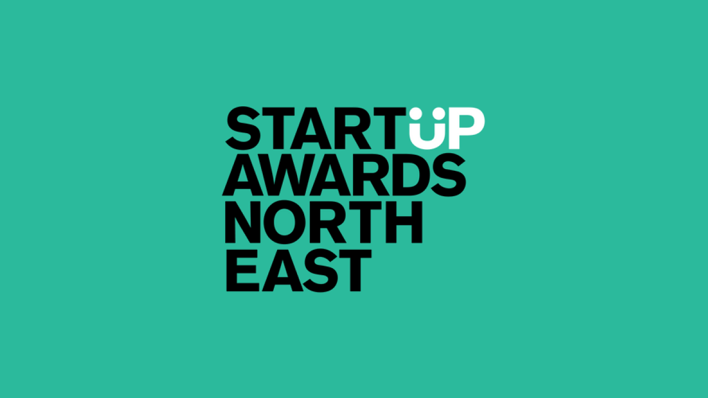

Startup Awards North East 2024
SkillUP - Jonny Chambers, Ian Brown & Stephen Ward
Stephen Ward welcomed everyone to celebrate achievements and who will take home awards. He mentioned that Charlotte is one of the most enthusiastic people in the region and supporting people and talked about the BEF which is a business and enterprise fund that helps create opportunities and build new lives and help them financially. Each founder gives a concise two-minute pitch and have awards for growth and social impact. These first finalists are yet to register their business and may be speaking for the first time.
Project "Hermes" - Antonios Kotsikaris
Project Hermes is a concept of bringing AI to telecommunications and cube sat industry to create a faster and more efficient approach with AI to use a single algorithm to bring different satellites together and be able to bring faster and more energy efficient satellite communication. Can also detect possible flaws using data processing and data gathering. They think it is time to bring future of AI and satellites today. Primary goal for next year is for now which is their project is in R&D phase but have developed algorithm but need to start coding to create the software for it to actually work.
Jogahealth - Jodie Freestone
Jogahealth is offering yoga which has helped Jodie with her health who has vocal epilepsy but can also help others. They have techniques to tune breath body and mind and help breathing properly and if have chronic or mental health condition it can really help. They hope to have their own space in future to help people live a happy live in a natural way and not rely too much on medication. jogahealth.co.uk How will they measure their social impact by getting more information on social media so more people are aware of their classes.
Glass Cage Cabaret - Autumn Conlin
Glass Cage Cabaret is cabaret in a relaxed environment to showcase local performers as there isn't much opportunity for this right now and want to embrace the new and old and have a 1920s art deco vibe but also with modern elements and want to give a platform for people and wanted something like this for years and it is a great opportunity for people to come. Reminding people to smile and have an escape for people is what we need right now, will also have it be more immersive with technology including projections. Primary goal for next year is to have some shows and have people come along and enjoy what the North East has to offer.
Blood Stone Books - Ciara Armstrong
Blood Stone Books combined their passions as a bookshop dedicated to dark and macabre as a safe space for people to explore what represents themselves. People are individuals and want a place that represents their individuality, people want a community around books. There is so much for her to learn and knows a younger version of her would love a place like that so step into the dark with her. Their target market is those who enjoy horror and thrillers and people into darker side of things and something for them too.
Artyant Creations - Anatolij Stroj
Artyant Creations is a set of fruit and vegetable plushies to help children with their diet and dental hygiene and will extend their product line with books and more plushies. They want to get children into fruit and vegetables and helps them be engaged and enthusiastic and help them learn health and wellness. The support they need is marketing after placing orders for their plushies to make more people aware of them.
Take The Cannoli - Jessica & Annabella Gregorio
Cannoli are a popular tube-shaped dessert but not many places specialise in them and are not authentic. Business and graphic design skills along with skills to make best authentic and fresh Cannoli with traditional and modern flavours and make their own shells and ricotta from Sicily and recently sold 239 Cannoli and think they have a strong business idea and they are confident they have a unique business idea. What inspired their idea is they are both half Italian but couldn't find fresh Cannoli here in the North East but did in London and Italy.
The Masquerade - Andrew Byass
The Masquerade crime drama webcomic about crime rates increasing in a city and the criminals are disguising themselves and one who is a hit man is then targeted by another person. It is about identity and is queer story with gender non-conforming characters and fashion and outfits inspired by masquerade parties. What makes their idea unique is their ideas are original and memorable and help target important issues.
Surreal Rosalynd - Rosalynd Byass
Surrealism was created in 1920s and helps explore parts of human existence. Many people have been in contact with mental health issues and their art helps themselves to continue to live and help people and people are okay and no-one else can create the work they do and want to do more talks and gallery shows and help people get through things and how their art has connected with them. What inspired their idea was a way to express themselves and when they found surrealism is a way to let things out and want to make sure people are not alone though their art.
Finance Bae - Kgosi Masebe-Langa
Kgosi has experience in finance and their goal is to make people better prepared to help with finance. They have created a finance app and built from learning and experience that works. It will help educate future generations to build confident financial people and partnerships with banks and insurance companies but thanks to developments in AI and experience and passion can get this set up and along with pensions and spending habits and looking for mentors and investors. They are targeting 14-to-27-year-old but could be expanded to all ages as a lot of people aren't as competent ad would hope and help bring a positive impact to people.
The Geordieland Experience - Mark Breillat
The Geordieland Experience is uniting tourism with events and an experience to remember. Guide through city coast and culture life and show what existed in Newcastle and got support from Destination North East and they are proper buzzing and have an app in development and the future is bright the future is black and white. Where their business will be in five years is to be worldwide such as Dallas Texas and Fuerteventura.
Set, Prop And Scenic Design - Amelia Fern Mitchell
Their work comes in is traditional and digital skills to work in film, TV and theatre and bring in more opportunities to the North East not just in London and support future generations and support more and more people and others are willing to collaborate with them and will see their work in future on Stage, TV or film. Their business in five years is to support people in North East and people are able to go to them and do decent work and expand this across the world.
Glamrent - Kahanda Gamage Pasindu
It iss hard and expensive to get outfits for events so can rent outfits from their app and website including subscription. They have access to fashion designers and if have challenges they can get help they need. Their mission is to build a sustainable community around fashion, effortless elegance with Glamrent. Their idea solves the social issues of fast fashion which is harmful for environment so want to have it possible to wear something new for every event easily and affordable.
Smash Life Challenge - Robert Little
Smash Life Challenge is a six-week challenge by helping those drinking or on drugs and help people see they don't need those things with Smash Life Challenge. They want support to live longer and happier and smash life. Their primary goal is to do a million trees, but they would after one year is to have a thousand people on their course and more.
Gym Beginner Sports Wear - Roya Ghassemi
when you start a gym and feel nervous about using the gym often called gymtimidation and so many people don't return. What if you could walk into a gym and feel confident with specially designed t-shirt with supportive stories so don't have to say a word by breaking ice and make friends and help make you return to gym again and again and help gym newbies to start health journeys. What inspire business idea was going to gym and not making it happen and thinking of other people.
Student Academic Support - Liyun Zhu
With international students it can be hard for them sometimes so there is an opportunity for support. They help coach international students, but existing support isn't sufficient and need personalised support, so their business is an online promotion to big up clients then with one to one support to help them. Students can see improvements in grades after ten sessions so getting more people to use this service for a great educational impact. They see their business in five years, so they do online promotion on social media but plan to work with Colleges and Universities and want to expand their impact and help more international students with their university lives.
The Jungle - Adam Mcgrouther
Adam talked about being starved of opportunities to create and many young people need a space to grow with a club with £30 per month memberships and act as recording studio including for Podcasts, sell merchandise from the get go and play music from those there and create more from their generation for their generation and take this to new levels for upcoming artists and help them flourish and members can relax with hot and cold drinks all day, they offer services no one else does and allow people to experience things even just for fun. They later want to go into mixed martial arts and help more people wirh this. This business is important as there aren't many positive things to do and have ambitions they want to get down and get them done.
SkillUP - Social Impact & High Growth Award Winners
Social Impact Award supported by PNE winner was Mark from The Geordieland Experience
High Growth Award supported by Gateshead Council winner was Kgosi from Finance Bae
StartUP - Jonny Chambers, Rob Bedford & Hina Joshi
For brand new businesses looking to do more and exciting things. Supported by BIC who are thirty years old this year and have helped contribute to the local economy. They have helped people of all ages and nurture tenants on site. They are in business or have had a business and know what it means to get started with business and also provide social enterprise support.
Roxid - Roxana Montazerian
They had privilege of being involved with conservation and Roxid is platform for a conservation on a structure along with AI to predict conservation needed including at risk buildings. We have to save cultural heritage for future generations. They secured clients through support from university and support from small business advisor.
Beat Global Academy - Sarah Mills & Kay Mccready
Unhealthy eating habits and others are things that impact new business owners and others and their platform helps ensure success and an empowering experience with their platform delivering a holistic approach including expert led workshops and podcasts. They stand out as a comprehensive solution for individuals and business owners and are committed to expanding their reach and delivering sustainable positive impact for entrepreneurs and busy professionals everywhere. What motivates them is other business professionals and have a huge purpose to change the lives of a lot of people and can always find something to move forward for.
Kultivar Tea - Dan Holmes
Is a lifestyle tea company, Tea started as a beautiful green piece of nature and helping appreciate where tea comes from and help promote use of tea for holistic wellbeing and corporate wellness. Try to just dedicate time to making tea and enjoy moment and see how it impacts your day and develop a supportive community of tea lovers. How to ensure business stays true is their passion for tea and this is unshakeable, and tea seems mundane but it is a lens to look at world but you can use anything to delve deep so this is the fuel to their fire that will burn deep into the future.
Marka Rating Limited - Robert Bowey
Marka Rating is a sustainability rating for hospitality businesses including a custom app to help sustain this along with Marka which is a sustainability rating for businesses and a survey for business that don't require sustainability knowledge to fill out for influences to have a Marka Rating with a standard and accessible financial model and £500 per year for training and access to the app. Strategy for hiring first employees which is adding people who bring fresh ideas to the business.
Dropa Arts - Julie Barrass
Is a new business about making passion for arts profitable where they help create curate and collaborate and they are an artist looking to exhibit and doing their own merchandise. They curate on other work such as a sci-fi mechanical objects featured in many sci-fi movies. Collaborate is them working eith various venues as well as sponsorships from various industries. Their vision for future is to touch in with technology and work with companies to create augmented reality experiences and working with Tyneside Cinema to do movie screenings and future is something that can travel but will be opening in Newcastle.
Force Mentale - Sarah Elliott
Is about stopping people overlooking the mental health aspects of exercise and they will donate to mental health charity and offer clothing for comfort that is yet to launch. They do for now share on social media with a lot of engagement but held a brand photoshoot which gained much and want to build quality of their garments and open a popup store and want to launch their brand. Social impact they are proud of achieving although just starting up but they want to support mental health issues.
Ninja Guardian - Dhanvir Panesar
We have come across personal safety matters such as drink spiking and they provide drink spiking testing kits and work to promote personal safety and these products have become crucial for many people. They plan to expand their products and collaborate with charities and others along with raising awareness and educate for wellbeing and safety of people. They want to raise visibility of the issue of personal safety and collaborate with experts on the field. They can scale by working with organisations, schools and colleges to bring their skills to education and make products accessible to buy.
Write Yourself Well - Aisha Lama
Offer accessible workshops for writing for wellbeing and fun on subscription basis with workshops added weekly online and person. They also do a creative writing journal and offer free trials and want to be doing eight in person workshops. They competed a program with business skills and mentor. They have created an innovative platform combining technology and want to get more involved with diverse communities in the North East. They are most proud working with volunteers where they wrote a list poem about being a volunteer with many who hadn't tried creative writing and express this and were able to take away a collaborative poem.
SJB Wellbeing - Sharon Joanne Bland
Is a holistic approach to wellbeing to help with things that people are currently facing. Many people are waiting for services, and they started in Dubai and relocated to North East to now evolve and expand and assist people and get people out of their comfort zone and help with business development. They have also been doing teachers training and sound baths. Social impact they are proud of was when they can back to UK and did hairdressing for homeless and did something for someone that stopped them taking their own life that made them feel they didn't want to do that.
The Sensual Healing Lab - Temitope Ojo
It started when they created aromatherapy products to help them feel better with their mental health, which is a big issue in society. A lot of products out there don't have ideal ingredients and instead build products to activate the senses with ingredients needed and are handmade with love for people's self-care or just for treat. They secured their first clients as they started experimenting at Tynemouth Market with a table and a dream with a sign saying Smell Me and they got their first clients there.
Everywhere Garden - Jacob Wood
Helps people grow flowers in any space and have subscription service for seasonal seeds. They are renters and it is hard to gardening and have issues with permanence and gardening takes time, knowledge and commitment. In UK is least natured county and have nature deprived communities and are looking at gardening sector and work with products that are renter and nature friendly and help them grow flowers in the North East. Advice for other entrepreneurs is to climb cringe mountain for social media and do stupid videos and don't be afraid to cringe yourself out.
Sensational Sounds Arts & Entertainments - Paul Moloney
Enables people to get into live venues and live gigs and showcases for friends and family. They support people with mental health and a lot of young musicians and buskers can't afford equipment so they supply this so they can be passionate about what they do for those who have talent and a voice and get their music to reach far and wide. Get support for people who need that and just want to help people. Vision is to give as many people up those first too steps of ladder and see them grow to success and let people progress and help as many people as possible who are struggling financially or with their mental health to create music of their own.
Mighty Minds Life Coaching for Kids - Lauren Percy
There is a need for early intervention to support children's mental health and empower children to overcome issues and use NLP to help them change the way they think and feel along with teaching essential life skills many aren't taught in school. They have programmes to help from home then in school to help them contribute more and their mission is to impact and inspire children to be happy confident versions of themselves. Balance taking wage with reinvesting the majority of their company's income has been reinvested but they have grants to help but with more income they can have more impact on children.
Tiger Energy Consultants - Phil Young
Was set up due to their experience where they support SMEs with business Energy costs but target renewals, most brokers will do one supplier they operate on a neutral basis for best value and best fit also do best price guarantee and market monitor service. Keep any eye on Tiger they may just roar. First clients gained through networking and trying to change a sector that doesn't have much transparency.
Altdesking - Seyed Fard & Vikas Kapil
Altdesking is when you hope when you go somewhere the WiFi works and can charge laptop or have you overstayed your welcome. Altdesking is finding and booking alternative workspace like a pub, bistro, pub or hotel lobby and connect people with those spaces in a app. Those spaces can also make sure WiFi and power is listed for them in the app and act as bridge from altdeskers to altspaces. Their vision for future is to be hub and reliable to find trusted spaces to work from for Altdeskers.
Egg One - Paul Harman
Is a courier service with a difference which is a revolutionary way to deliver parcels where customer confirms the delivery not the courier. It will work and need everyone's help do that, but it will make a lot of money. What motivates them to keep pushing them forward which is no one likes tough times and if something isn't work it make it work, use a positive to make things work.
Legacy Guardians - Vikki Baptie
When someone passes away estates can be difficult to organise where a standard executor won't cut it. Many people don't have a will or anything together. They help provide and streamline estate organisation with legacy framework, checklist and AI powered filing system and can get an access pass to book call with your guardian that reassures everything it taken care of and have peace of mind during life's tough times. They want people to help organise things and have friendly face who can say they've got it sorted during those tough moments in life.
StartUP - Social Impact & High Growth Award Winners
Social Impact Award supported by British Business Bank winner was Lauren from Mighty Minds Life Coaching For Kids
High Growth Award supported by British Business Bank winner was Temitope from The Sensual Healing Lab
ScaleUP - Jonny Chambers, Lucy Batley & Michael Shuker
For ambitious business owners achieving significant revenue and eager to become employers of tomorrow. In 2011 Square One Law was a startup and built business around making it great place to be and being where energy is good of taking company from startup to scale up and there is a big leap of faith. They are a full-service commercial law firm to help businesses and enjoy what businesses do and enjoy going on that journey.
Foundation for Good - Fraser Neill
Is a registered charity set up in 2021 and offer services working with adults who struggle with their wellbeing and young people who struggle and operate boxing club including tag combat and want to make lasting change to get this new sport recognised in Special Olympics and Paralympics and will have a new building in 2025 that is safe and warm and welcoming for everyone. What role does innovation play is they are a very innovative person and what they do is built on innovation and experience and to help neurodivergent people and they want to innovate to solve people's and community's problems.
VT Treatmeent - Mohammed Alansary & Amelia Calvert
Last year they won the High Growth Award for StartUP, they focus on rare conditions and now have five different brands and factory. They chase patents and promote their products. They have a medical product that can help everyone and is an anti-aging treatment which is a plasma injection to improve skin without needling. Ensure company culture is strong is with company ethics and research they conduct and have same ethics in their business with shared values.
Bluejay Wellness - Lisa Cryer
Many people suffer from a diagnosable mental illness, they have grown their business and use yoga and mindfulness to help their wellbeing for life. They have helped bring in anti-bullying campaign with their megaphone and had given positive affirmations to help them. They have launched a daily mindfulness campaign. They have been successful in a growth fund and added new services to help young people where they need it most. Vision for the future is a tiered approach working with schools and young people for broad impact but can also work with young people and vision is to bring staff on for broader things and use time they gain to do one-to-one work and have a waiting list of young people they can help.
Evol Promotions - Michael Gilroy
Was a live fight Promotions company but has expanded into other events like live comedy and working on a programme coming to a streaming service and also work on suicide prevention and offer one to one support, but all events and things sold raises money. To scale their business is they work at moment in North East and plan to expand to other areas and add shows like live fight in Liverpool but also add Muay Thai fighters and get more recognition to the sport.
T&G Direct Funeral Services - Trevor Shingler
They worked with large funeral directors and family firm and noticed prices were going up set up cost effective funerals without shrinking professionalism and has contract with NHS for five years for children and babies. Funerals are their passion and are doing what they love. Team is keeping team small and keep costs low to make sure families will save money.
Mamma Social Co - Kayleigh Laverick
It came from them feeling not connected to anything except their child and felt they wanted to take their own life but put a post up about wanting to have a walk and a few others turned up from their need to heal and now have thousands of members but their challenge it is free so now they are a marketing agency connecting brands to their loyal community and are committed to change parenting landscape one walk at a time. A significant milestone was being recognised by big brands to sponsor them has propelled them into the next stage and allowed them to take on staff and is about sustaining the work they are doing. They were told to add payment for membership, but they said no as there would be that one who can't afford it.
Advertise1 - Jon Waite
They are for those looking for someone to look after your website or who need a hand. They are a limited company past three years, they have a computing degree and worked with website service companies. They help businesses build websites for those with little budget and just starting out and progress as going along, they have various people who work alongside them and worked in various places majority in the North East and other places. How do you measure success is that a customer is happy with product or service, they get a referral and do get a lot of satisfaction from what they do.
Empowerment Learning - Kelly Walton
They are an empowerment coach, many young people suffer from mental health issues, and many avoid school due to anxiety. Their aim is to empower young people and education providers and get them to work together and have education coaching which is having positive impact on young people and schools with an impact on their wellbeing and making them more resilient. They will have improved wellbeing and academic retainment going forward. What inspired them was they came from education and trained to be a coach and put this together and thought if someone listened to them when younger so put a focus on that in the North East.
StartUP - Social Impact & High Growth Award Shortlist & Winners
Social Impact & High Growth Award Shortlist
Shortlisted for Social Impact Award supported by Square One was Kayleigh from Mamma Social Co and Fraser from Foundation for Good
Shortlisted for High Growth Award supported by Square One was Kayleigh from Mamma Social Co and Trevor from T&G Direct Funeral Services
How do they foster creativity?
Kayleigh said team is new and want to encourage return to work for Mams and have focus on work life balance and focus on social campaigns. Fraser had daily and weekly meeting and the meeting they have they allow people to bring their own information and suggestions and every team member's input is deeply valued and have over fifty different people who make those decisions. Trevor mentioned getting to know the people and play their favourite music and wear colours that fit, and they have great banter at work when going through hard times in people's lives.
What is most unconventional idea that paid off?
Kayleigh mentioned approaching big brands and being really direct with them and speak your truth to them as why wouldn't they want to work with them. Fraser mentioned in having believe that people don't believe as at one point they almost lost the building and people told them it was unachievable and worked to get funding to renovate building including a wellbeing cafe for advice and support and create a community for people to work together. Trevor mentioned that don't have to dress like Lurch so had a funeral where they had their top hat and cane wrapped in silver glitter and a diamante silver waistcoat was one of the most memorable things they have done.
How do you celebrate successes?
Kayleigh does a little dance, and they grab a coffee and have a little walk and go back to origins they don't have meeting in a board room they go for a little walk and a bigger one they are doing spa day. Fraser goes to things like bowling or goes out for pizza with the team. Trevor works with organisation about suicide loss so give money to them and gives back to community in other ways too.
Surprising lesson learned from failure or setback?
Kayleigh said originally they had limited and community interest company was hard but got CIC they got a lot of money then put money into website and other things and the money dried up but it seemed their brand looked too good as need to think about other groups but mental health is without physical awareness but they could put themselves into sustainability through brand partnerships but for charities it is someone else deciding so went with company side. Fraser mentioned that failing is okay as failing forward is the key message from failure. Trevor mentioned working for big companies doing three funerals every day and were paying for advertising things could go well or quiet again but when putting forward for NHS contract was massive, they didn't go into job for load of money but to help people.
Social Impact & High Growth Award Winners
Social Impact Award supported by Square One winner was Kayleigh from Mamma Social Co
High Growth Award supported by Square One winner was Trewor from T&G Direct Funeral Services
Closing - Stephen Ward & Charlotte Windebank
Stephen Ward said that people today have taken lived experience into an astonishing lever that has changed their personal world. They just want to do business and change their communities in an amazing way. The energy in the room is intoxicating but be inspired, be amazed and transform communities you work in as you make a huge difference.
Charlotte mentioned partners have been instrumental and they curate who they want to be part of the awards and people will be supported by partners here today and receiving support. If you can do this, you can do anything.